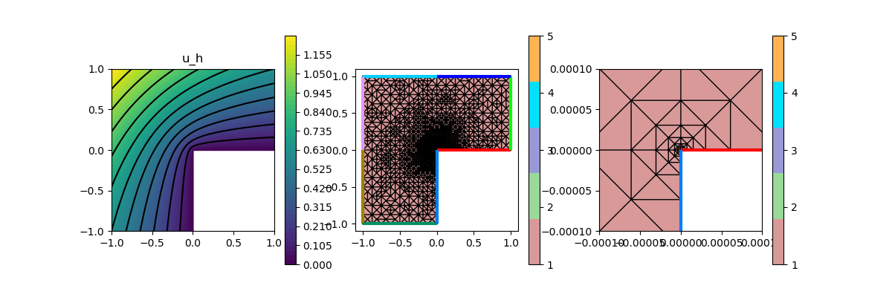
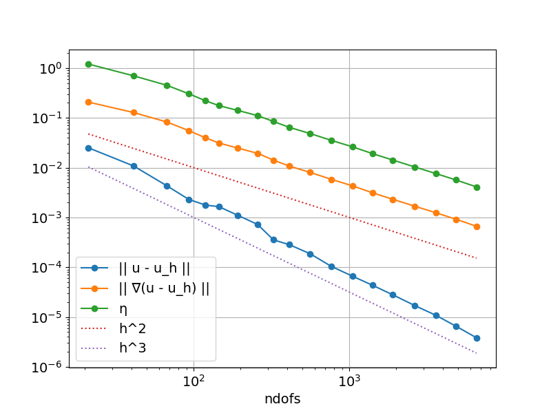

204 : Poisson L-shape Adaptive Mesh Refinement
This example computes the standard-residual error estimator for the $H^1$ error $e = u - u_h$ of some $H^1$-conforming approximation $u_h$ to the solution $u$ of some Poisson problem $-\Delta u = f$ on an L-shaped domain, i.e.
\[\eta^2(u_h) := \sum_{T \in \mathcal{T}} \lvert T \rvert \| f + \Delta u_h \|^2_{L^2(T)} + \sum_{F \in \mathcal{F}} \lvert F \rvert \| [[\nabla u_h \cdot \mathbf{n}]] \|^2_{L^2(F)}\]
This example script showcases the evaluation of 2nd order derivatives like the Laplacian and adaptive mesh refinement.
module Example204_PoissonLshapeAdaptive2D
using GradientRobustMultiPhysics
using ExtendableGrids
using GridVisualize
# exact solution u for the Poisson problem
function u!(result,x)
result[1] = atan(x[2],x[1])
if result[1] < 0
result[1] += 2*pi
end
result[1] = sin(2*result[1]/3)
result[1] *= (x[1]^2 + x[2]^2)^(1/3)
end
# everything is wrapped in a main function
function main(; verbosity = 0, maxdofs = 5000, theta = 1//3, order = 2, Plotter = nothing)
# set log level
set_verbosity(verbosity)
# initial grid
xgrid = grid_lshape(Triangle2D)
# choose some finite element
FEType = H1Pk{1,2,order}
# negotiate data functions to the package
u = DataFunction(u!, [1,2]; name = "u", dependencies = "X", quadorder = 5)
∇u = ∇(u)
# setup Poisson problem
Problem = PoissonProblem()
add_boundarydata!(Problem, 1, [2,3,4,5,6,7], BestapproxDirichletBoundary; data = u)
add_boundarydata!(Problem, 1, [1,8], HomogeneousDirichletBoundary)
# setup exact error evaluations
L2Error = L2ErrorIntegrator(Float64, u, Identity)
H1Error = L2ErrorIntegrator(Float64, ∇u, Gradient)
# define error estimator
# kernel for jump term : |F| ||[[grad(u_h)*n_F]]||^2_L^2(F)
xFaceVolumes::Array{Float64,1} = xgrid[FaceVolumes]
xFaceNormals::Array{Float64,2} = xgrid[FaceNormals]
xCellVolumes::Array{Float64,1} = xgrid[CellVolumes]
function L2jump_integrand(result, input, item)
result[1] = ((input[1]*xFaceNormals[1,item] + input[2]*xFaceNormals[2,item])^2) * xFaceVolumes[item]
return nothing
end
# kernel for volume term : |T| * ||f + Laplace(u_h)||^2_L^2(T)
# note: f = 0 here, but integrand can also be made x-dpendent to allow for non-homogeneous rhs
function L2vol_integrand(result, input, item)
result[1] = input[1]^2 * xCellVolumes[item]
return nothing
end
# ... which generates an action...
eta_jumps_action = Action(L2jump_integrand, [1,2]; name = "kernel of η (jumps)", dependencies = "I", quadorder = order-1)
eta_vol_action = Action(L2vol_integrand, [1,1]; name = "kernel of η (vol)", dependencies = "I", quadorder = order-1)
# ... which is used inside an ItemIntegrator
ηF = ItemIntegrator(Float64,ON_IFACES,[Jump(Gradient)],eta_jumps_action; name = "η_F")
ηT = ItemIntegrator(Float64,ON_CELLS,[Laplacian],eta_vol_action; name = "η_T")
NDofs = zeros(Int, 0)
ResultsL2 = zeros(Float64, 0)
ResultsH1 = zeros(Float64, 0)
Resultsη = zeros(Float64, 0)
Solution = nothing
ndofs = 0
level = 0
while ndofs < maxdofs
level += 1
# create a solution vector and solve the problem
println("------- LEVEL $level")
@time begin
FES = FESpace{FEType}(xgrid)
Solution = FEVector{Float64}("u_h",FES)
solve!(Solution, Problem)
ndofs = length(Solution[1])
push!(NDofs, ndofs)
println("\t ndof = $ndofs")
print("@time solver =")
end
# calculate local error estimator contributions
@time begin
xFaceVolumes = xgrid[FaceVolumes]
xFaceNormals = xgrid[FaceNormals]
xCellVolumes = xgrid[CellVolumes]
vol_error = zeros(Float64,1,num_sources(xgrid[CellNodes]))
jump_error = zeros(Float64,1,num_sources(xgrid[FaceNodes]))
evaluate!(vol_error,ηT,Solution[1])
evaluate!(jump_error,ηF,Solution[1])
# calculate total estimator
push!(Resultsη, sqrt(sum(jump_error) + sum(vol_error)))
print("@time η eval =")
end
# calculate exact L2 error, H1 error
@time begin
push!(ResultsL2, sqrt(evaluate(L2Error,Solution[1])))
push!(ResultsH1, sqrt(evaluate(H1Error,Solution[1])))
print("@time e eval =")
end
if ndofs >= maxdofs
break;
end
# mesh refinement
@time begin
if theta >= 1 ## uniform mesh refinement
xgrid = uniform_refine(xgrid)
else ## adaptive mesh refinement
# compute refinement indicators
nfaces = num_sources(xgrid[FaceNodes])
refinement_indicators::Array{Float64,1} = view(jump_error,1,:)
xFaceCells = xgrid[FaceCells]
cell::Int = 0
for face = 1 : nfaces, k = 1 : 2
cell = xFaceCells[k,face]
if cell > 0
refinement_indicators[face] += vol_error[1,cell]
end
end
# refine by red-green-blue refinement (incl. closuring)
facemarker = bulk_mark(xgrid, refinement_indicators, theta; indicator_AT = ON_FACES)
xgrid = RGB_refine(xgrid, facemarker)
end
print("@time refine =")
end
println("\t η = $(Resultsη[level])\n\t e = $(ResultsH1[level])")
end
# plot
p=GridVisualizer(; Plotter = Plotter, layout = (1,3), clear = true, resolution = (1200,400))
scalarplot!(p[1,1], xgrid, nodevalues_view(Solution[1])[1], levels = 11, title = "u_h")
gridplot!(p[1,2], xgrid; linewidth = 1)
gridplot!(p[1,3], xgrid; linewidth = 1, xlimits = [-0.0001,0.0001], ylimits = [-0.0001,0.0001])
# print/plot convergence history
print_convergencehistory(NDofs, [ResultsL2 ResultsH1 Resultsη]; X_to_h = X -> X.^(-1/2), ylabels = ["|| u - u_h ||", "|| ∇(u - u_h) ||", "η"])
plot_convergencehistory(NDofs, [ResultsL2 ResultsH1 Resultsη]; add_h_powers = [order,order+1], X_to_h = X -> X.^(-1/2), Plotter = Plotter, ylabels = ["|| u - u_h ||", "|| ∇(u - u_h) ||", "η"])
end
endThis page was generated using Literate.jl.
Default output:
julia> Example204_PoissonLshapeAdaptive2D.main()
------- LEVEL 1
ndof = 21
@time solver = 0.283076 seconds (521.66 k allocations: 28.560 MiB, 21.31% gc time, 99.12% compilation time)
@time η eval = 3.149711 seconds (2.44 M allocations: 140.986 MiB, 1.61% gc time, 99.78% compilation time)
@time e eval = 4.316006 seconds (3.27 M allocations: 186.920 MiB, 2.50% gc time, 99.92% compilation time)
@time refine = 0.112441 seconds (87.38 k allocations: 4.923 MiB, 99.82% compilation time)
η = 1.2064583360169907
e = 0.20764746516243865
------- LEVEL 2
ndof = 41
@time solver = 0.002517 seconds (2.15 k allocations: 299.125 KiB)
@time η eval = 0.000949 seconds (1.45 k allocations: 86.984 KiB)
@time e eval = 0.000933 seconds (974 allocations: 78.484 KiB)
@time refine = 0.006122 seconds (85 allocations: 7.172 KiB, 96.55% compilation time)
η = 0.699363303780635
e = 0.12808914488126533
------- LEVEL 3
ndof = 67
@time solver = 0.002724 seconds (2.35 k allocations: 367.289 KiB)
@time η eval = 0.000994 seconds (1.47 k allocations: 88.859 KiB)
@time e eval = 0.001334 seconds (974 allocations: 78.859 KiB)
@time refine = 0.000068 seconds (49 allocations: 6.219 KiB)
η = 0.4521377020155059
e = 0.08269561626760584
------- LEVEL 4
ndof = 93
@time solver = 0.002775 seconds (2.57 k allocations: 560.250 KiB)
@time η eval = 0.000973 seconds (1.49 k allocations: 90.766 KiB)
@time e eval = 0.001714 seconds (974 allocations: 79.234 KiB)
@time refine = 0.000063 seconds (52 allocations: 9.953 KiB)
η = 0.30443683244048675
e = 0.05537088982183
------- LEVEL 5
ndof = 119
@time solver = 0.002799 seconds (2.78 k allocations: 650.648 KiB)
@time η eval = 0.001011 seconds (1.51 k allocations: 92.688 KiB)
@time e eval = 0.002078 seconds (974 allocations: 79.734 KiB)
@time refine = 0.000064 seconds (53 allocations: 13.391 KiB)
η = 0.2203282351651376
e = 0.03965969913361387
------- LEVEL 6
ndof = 145
@time solver = 0.003146 seconds (2.98 k allocations: 772.047 KiB)
@time η eval = 0.001055 seconds (1.53 k allocations: 94.547 KiB)
@time e eval = 0.002630 seconds (974 allocations: 80.047 KiB)
@time refine = 0.000080 seconds (60 allocations: 15.203 KiB)
η = 0.1762744224302262
e = 0.03132434391645209
------- LEVEL 7
ndof = 192
@time solver = 0.003767 seconds (3.42 k allocations: 915.352 KiB)
@time η eval = 0.001219 seconds (1.57 k allocations: 97.781 KiB)
@time e eval = 0.003223 seconds (974 allocations: 80.672 KiB)
@time refine = 0.000081 seconds (64 allocations: 16.656 KiB)
η = 0.14099823000025685
e = 0.024700543922290406
------- LEVEL 8
ndof = 257
@time solver = 0.004387 seconds (3.89 k allocations: 1.172 MiB)
@time η eval = 0.001703 seconds (1.62 k allocations: 102.828 KiB)
@time e eval = 0.004293 seconds (974 allocations: 81.734 KiB)
@time refine = 0.000095 seconds (65 allocations: 18.781 KiB)
η = 0.11095486274991237
e = 0.019413443504801117
------- LEVEL 9
ndof = 325
@time solver = 0.005562 seconds (4.41 k allocations: 1.427 MiB)
@time η eval = 0.001820 seconds (1.67 k allocations: 108.031 KiB)
@time e eval = 0.005432 seconds (976 allocations: 83.328 KiB)
@time refine = 0.000108 seconds (72 allocations: 32.422 KiB)
η = 0.08461684077566962
e = 0.01414805497392032
------- LEVEL 10
ndof = 411
@time solver = 0.006937 seconds (4.95 k allocations: 1.777 MiB)
@time η eval = 0.001972 seconds (1.74 k allocations: 114.062 KiB)
@time e eval = 0.006844 seconds (974 allocations: 84.172 KiB)
@time refine = 0.000129 seconds (90 allocations: 42.797 KiB)
η = 0.0645153841353086
e = 0.010765787226538585
------- LEVEL 11
ndof = 559
@time solver = 0.008423 seconds (6.19 k allocations: 2.375 MiB)
@time η eval = 0.002420 seconds (1.86 k allocations: 124.891 KiB)
@time e eval = 0.009131 seconds (974 allocations: 86.547 KiB)
@time refine = 0.000145 seconds (105 allocations: 48.391 KiB)
η = 0.04848831147913857
e = 0.008034967299250764
------- LEVEL 12
ndof = 765
@time solver = 0.010938 seconds (8.09 k allocations: 3.159 MiB)
@time η eval = 0.003094 seconds (2.23 k allocations: 142.688 KiB)
@time e eval = 0.013364 seconds (974 allocations: 89.547 KiB)
@time refine = 0.000191 seconds (131 allocations: 55.109 KiB)
η = 0.035315806763950255
e = 0.0058268606576840935
------- LEVEL 13
ndof = 1049
@time solver = 0.014472 seconds (10.61 k allocations: 4.165 MiB)
@time η eval = 0.004079 seconds (3.31 k allocations: 176.438 KiB)
@time e eval = 0.017697 seconds (974 allocations: 94.047 KiB)
@time refine = 0.000250 seconds (167 allocations: 80.203 KiB)
η = 0.026161112362157544
e = 0.004305768821534541
------- LEVEL 14
ndof = 1407
@time solver = 0.019685 seconds (14.25 k allocations: 5.452 MiB)
@time η eval = 0.005386 seconds (5.45 k allocations: 230.875 KiB)
@time e eval = 0.023757 seconds (2.60 k allocations: 125.016 KiB)
@time refine = 0.000317 seconds (206 allocations: 120.438 KiB)
η = 0.0191323212261532
e = 0.003128248496066503
------- LEVEL 15
ndof = 1899
@time solver = 0.025961 seconds (19.43 k allocations: 7.434 MiB)
@time η eval = 0.011829 seconds (8.50 k allocations: 307.609 KiB)
@time e eval = 0.033962 seconds (5.02 k allocations: 170.328 KiB)
@time refine = 0.000407 seconds (300 allocations: 137.625 KiB)
η = 0.014214742705189113
e = 0.0023170782126997517
------- LEVEL 16
ndof = 2632
@time solver = 0.082453 seconds (27.48 k allocations: 9.453 MiB, 54.04% gc time)
@time η eval = 0.010324 seconds (13.04 k allocations: 422.406 KiB)
@time e eval = 0.047400 seconds (8.61 k allocations: 237.672 KiB)
@time refine = 0.000667 seconds (384 allocations: 198.312 KiB)
η = 0.010307927782974133
e = 0.0016816677513626292
------- LEVEL 17
ndof = 3586
@time solver = 0.058654 seconds (37.52 k allocations: 12.135 MiB)
@time η eval = 0.013043 seconds (18.95 k allocations: 570.250 KiB)
@time e eval = 0.067019 seconds (13.29 k allocations: 325.297 KiB)
@time refine = 0.000697 seconds (460 allocations: 292.000 KiB)
η = 0.007627208670980243
e = 0.0012432460364896643
------- LEVEL 18
ndof = 4834
@time solver = 0.065228 seconds (50.13 k allocations: 16.970 MiB)
@time η eval = 0.016111 seconds (26.73 k allocations: 765.844 KiB)
@time e eval = 0.081715 seconds (19.48 k allocations: 441.047 KiB)
@time refine = 0.000888 seconds (603 allocations: 435.297 KiB)
η = 0.00566423133987034
e = 0.0009217759234222464
------- LEVEL 19
ndof = 6545
@time solver = 0.087651 seconds (68.03 k allocations: 23.681 MiB)
@time η eval = 0.022207 seconds (37.38 k allocations: 1.009 MiB)
@time e eval = 0.109668 seconds (27.95 k allocations: 599.641 KiB)
ndofs | || u - u_h || order | || ∇(u - u_h) || order | η order |
============|=============================|=============================|=============================|
21 | 2.51263e-02 0.000 | 2.07647e-01 0.000 | 1.20646e+00 0.000 |
41 | 1.08420e-02 2.512 | 1.28089e-01 1.444 | 6.99363e-01 1.630 |
67 | 4.34439e-03 3.724 | 8.26956e-02 1.782 | 4.52138e-01 1.776 |
93 | 2.29966e-03 3.880 | 5.53709e-02 2.447 | 3.04437e-01 2.412 |
119 | 1.77069e-03 2.121 | 3.96597e-02 2.707 | 2.20328e-01 2.623 |
145 | 1.64959e-03 0.717 | 3.13243e-02 2.388 | 1.76274e-01 2.258 |
192 | 1.10302e-03 2.867 | 2.47005e-02 1.692 | 1.40998e-01 1.591 |
257 | 7.23964e-04 2.888 | 1.94134e-02 1.652 | 1.10955e-01 1.644 |
325 | 3.55035e-04 6.071 | 1.41481e-02 2.696 | 8.46168e-02 2.309 |
411 | 2.83982e-04 1.902 | 1.07658e-02 2.327 | 6.45154e-02 2.311 |
559 | 1.86930e-04 2.719 | 8.03497e-03 1.903 | 4.84883e-02 1.857 |
765 | 1.04083e-04 3.733 | 5.82686e-03 2.048 | 3.53158e-02 2.021 |
1049 | 6.58770e-05 2.898 | 4.30577e-03 1.916 | 2.61611e-02 1.901 |
1407 | 4.34759e-05 2.831 | 3.12825e-03 2.176 | 1.91323e-02 2.131 |
1899 | 2.79736e-05 2.941 | 2.31708e-03 2.002 | 1.42147e-02 1.982 |
2632 | 1.69923e-05 3.054 | 1.68167e-03 1.964 | 1.03079e-02 1.969 |
3586 | 1.08652e-05 2.892 | 1.24325e-03 1.953 | 7.62721e-03 1.948 |
4834 | 6.55972e-06 3.379 | 9.21776e-04 2.004 | 5.66423e-03 1.993 |
6545 | 3.83987e-06 3.534 | 6.64311e-04 2.162 | 4.10535e-03 2.124 | 